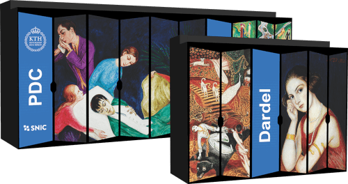
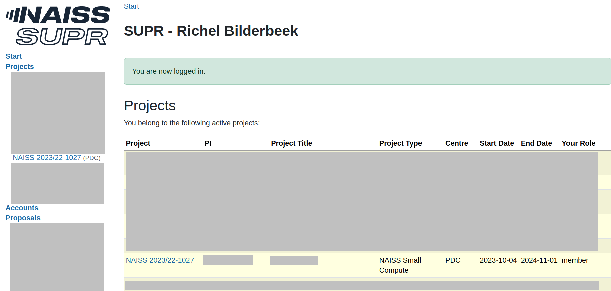
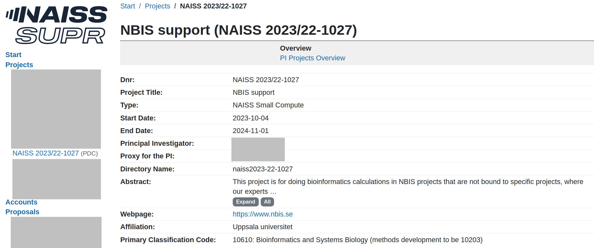
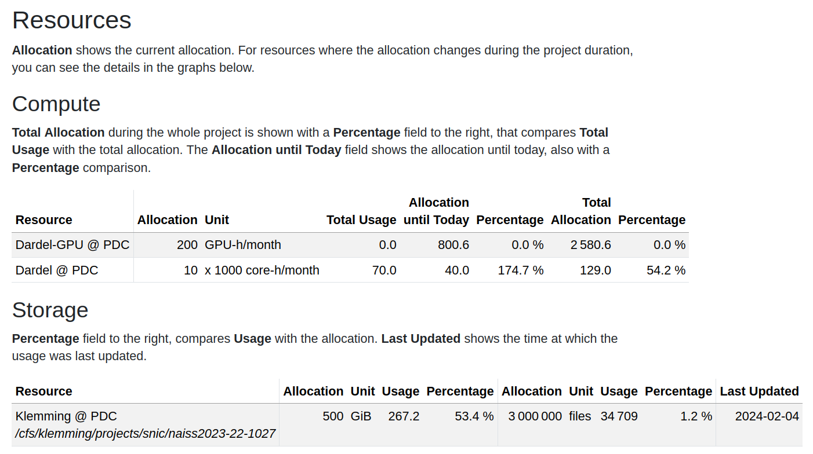
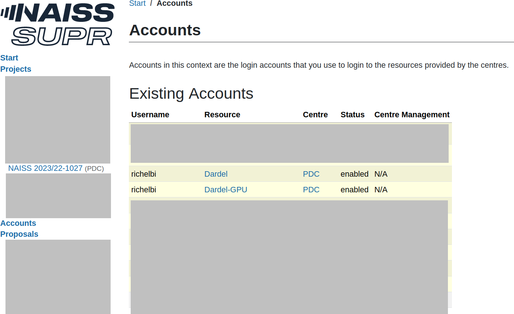
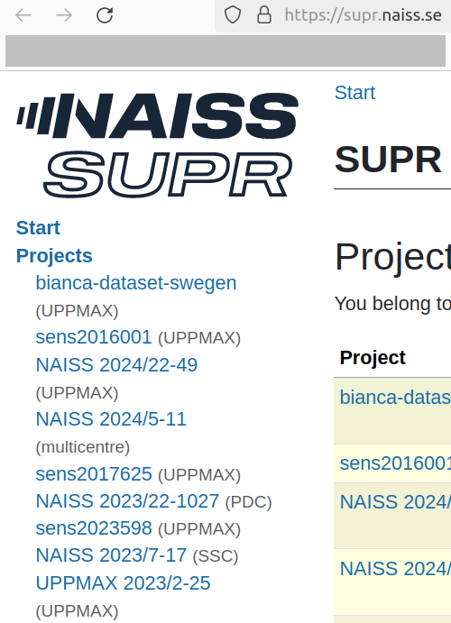
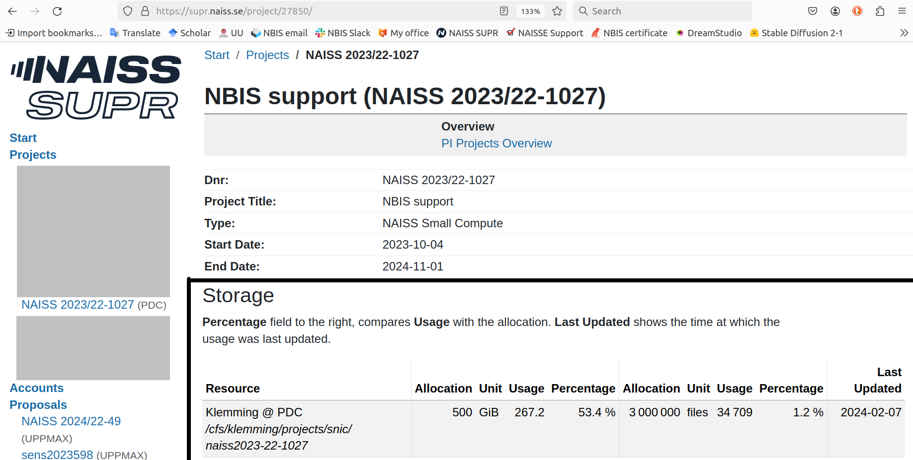
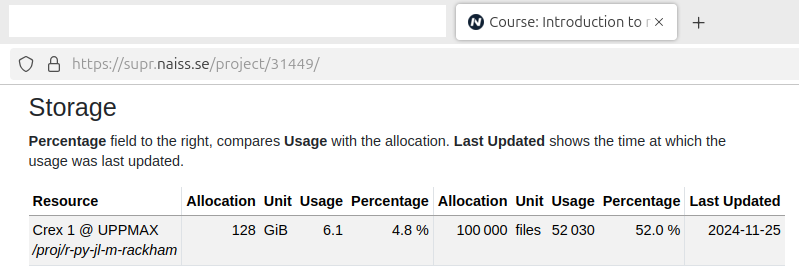

Dardel migration and/or Rackham recovery¶

This page describes how to transfer files to Dardel, the HPC cluster at PDC in Stockholm.
Visit the Rackham 2 Dardel Drop-in
Every Tuesday at 11:15 (except for the month of July) there is online Rackham 2 Dardel Drop-in at Zoom with meeting ID 64896912764
Please join us if you need assistance logging in to Dardel or migrating your data.
Why do I need this?
The Rackham cluster will be decommissioned at the end of 2024, hence all project directories will be deleted. The plan from NAISS is that all Rackham users can move to the Dardel cluster at PDC, and we encourage you to do so right away.
Researchers at Uppsala University, should they so desire, can choose to keep data at UPPMAX. Projects with UU affiliation that remain on Rackham at the end of this year can be transferred to a new local system.
To facilitate this move, we have created a tool that makes the transfer easier.
Short version¶
The really short description is:
- Become a member of a project with resources at Dardel in SUPR.
- Create a passwordless SSH key.
- Add the key to the PDC login portal.
- Add
*.uppmax.uu.seas allowed address for the key. - Load module
darsyncand rundarsync checkon the folder you want to transfer. - Create a Slurm script using
darsync genon the folder you want to transfer. - Submit the created Slurm script.
See the rest of this guide for more information about these steps.
Long version¶
Prefer a video?
This procedure is also shown in this YouTube video.
First, we are here to help. Please contact support if you run into problems when trying the guide below.
This migration consists of a couple of steps summarised below. Press the links to get more detailed explanation of each step. Note that step 1 requires some hours of waiting and step 2 requires an overnight wait.
flowchart TD
get_supr_project[1 Access to a SUPR project with Dardel]
get_pdc_account[2 Access to a PDC account]
create_ssh_key[3 Create temporary SSH keys]
add_ssh_key[4 Add the SSH keys to the PDC Login Portal]
run_darsync[5 Run Darsync]
slurm[6 Submit the script created by Darsync]
check_logs[7 Check logs]
double_check_transfer[8 double-check the transfer]
delete_ssh_keys[9 Delete the temporary SSH keys]
delete_rackham_files[10 Delete the files on Rackham]
get_supr_project --> |needed for| get_pdc_account
create_ssh_key --> |needed for| add_ssh_key
get_pdc_account --> |needed for| add_ssh_key
add_ssh_key --> |needed for| run_darsync
run_darsync --> |needed for| slurm
slurm --> |needed for| check_logs
check_logs --> |optional| double_check_transfer
double_check_transfer --> delete_ssh_keys
check_logs --> |needed for| delete_ssh_keys
delete_ssh_keys --> |needed for| delete_rackham_filesOverview of the migration process. Note that step 1 requires some hours of waiting and step 2 requires an overnight wait.
After those steps, the procedure will take around 20 minutes, as shown in the YouTube video that shows this procedure.
1. Get access to a SUPR project with Dardel¶
First step is to get get access to a SUPR project with Dardel. This is described at PDC's page on getting access to Dardel (note that it is impossible to give more precise links, as the PDC documentation does not allow for it). You will get an email when you are added to a project, this can take some hours.
How do I know I have access to a Dardel project?
Login to https://supr.naiss.se/. If there is a PDC project, you may have access to a project with Dardel.

An example user that has access to a PDC project
If you may a PDC project that does not use Dardel, click on the project to go the the project overview.

An example PDC project overview
From there, scroll down to 'Resources'. If you see 'Dardel' among the compute resources, you have confirmed you have access to a Dardel project.

Resources from an example PDC project
2. Get a PDC account via SUPR¶
Get a PDC account via SUPR. This is described at the PDC page on how to apply for a SUPR account. You will get a PDC account overnight.
How do I know I have a PDC account?
Login to https://supr.naiss.se/. and click on 'Accounts' in the main menu bar at the left.
If you see 'Dardel' among the resources, and status 'Enabled' in the same row, you have a PDC account!

Example of a user having an account at PDC's Dardel HPC cluster
3. Create SSH key pair¶
First we will create SSH keys to be able to connect to Dardel. We have made a small tool to create the keys for Darsync for you, so just run these commands on UPPMAX:
Loading the needed module:
Then creating the key:
How does that look like?
The screen output will look similar to this:
[sven@rackham1 ~]$ module load darsync
[sven@rackham1 ~]$ darsync sshkey
____ ____ _ _ _ _________ __
/ ___/ ___|| | | | |/ / ____\ \ / /
\___ \___ \| |_| | ' /| _| \ V /
___) |__) | _ | . \| |___ | |
|____/____/|_| |_|_|\_\_____| |_|
The sshkey module of this script will generate a SSH key pair that you can use to login to Dardel.
It will create two files, one with the private key and one with the public key.
The private key should be kept secret and the public key should be added to your authorised_keys file on Dardel.
Created SSH key: /home/sven/id_ed25519_pdc and /home/sven/id_ed25519_pdc.pub
Content of the public key:
ssh-ed25519 AAAAC3NzaC1lZDI1NTE5AAAAIAZkAoqlvm+YQrw26mCuH/4B/meG8O6aS8BB3kw1FDfl sven@rackham1.uppmax.uu.se
You will now have to add the public key above to the Dardel Login Portal, https://loginportal.pdc.kth.se
See the user guide for more info about this,
https://docs.uppmax.uu.se/software/ssh_key_use_dardel/#2-how-to-add-an-ssh-key-to-the-pdc-login-portal
4. Add the public key to the PDC Login Portal¶
See create and use an SSH key pair for Dardel, step 2, to see how to upload the public SSH key to the PDC Login Portal.
5. Run the migration tool Darsync¶
5.1 Load the module¶
5.2 Check for problems¶
This step is optional, yet may help against possible problems.
Running darsync check will make Darsync prompt for questions:
How does that look like?
Here is output similar to yours, for a user with username sven
that wants to transfer his Documents folder:
[sven@rackham1 ~]$ darsync check
____ _ _ _____ ____ _ __
/ ___| | | | ____/ ___| |/ /
| | | |_| | _|| | | ' /
| |___| _ | |__| |___| . \
\____|_| |_|_____\____|_|\_\
The check module of this script will recursively go through
all the files in, and under, the folder you specify to see if there
are any improvements you can to do save space and speed up the data transfer.
It will look for file formats that are uncompressed, like .fasta and .vcf files
(most uncompressed file formats have compressed variants of them that only
take up 25% of the space of the uncompressed file).
If you have many small files, e.g. folders with 100 000 or more files,
it will slow down the data transfer since there is an overhead cost per file
you want to transfer. Large folders like this can be archived/packed into
a single file to speed things up.
Specify which directory you want to copy.
Make sure to use tab completion (press the tab key to complete directory names)
to avoid spelling errors.
Ex.
/proj/naiss2099-22-999/
or
/proj/naiss2099-22-999/raw_data_only
Specify local directory: Documents
/domus/h1/sven/Documents/MATLAB
____ ___ _ _ _____
| _ \ / _ \| \ | | ____|
| | | | | | | \| | _|
| |_| | |_| | |\ | |___
|____/ \___/|_| \_|_____|
Checking completed. Unless you got any warning messages above you
should be good to go.
Generate a Slurm script file to do the transfer by running this script again,
but use the 'gen' option this time. See the help message for details,
or continue reading the user guide for examples on how to run it.
darsync gen -h
A file containing file ownership information,
/domus/h1/sven/Documents/darsync_Documents.ownership.gz,
has been created. This file can be used to make sure that the
file ownership (user/group) will look the same on Dardel as it does here.
See ../cluster_guides/dardel_migration/#52-check-for-problems
for more info about this.
Can I also give the arguments on the command line?
If you prefer to specify everything from the command-line, do:
where [foldername] is the name to a folder,
for example darsync check --local-dir ~/my_folder.
There are some more optional arguments, see these by doing:
If there are problems reported, contact support or try to fix them yourself.
What is the file darsync_[dirname].ownership.gz?
This is a file containing file ownership information. It is created in the root of the folder you told Darsync to transfer to Dardel.
When a user transfer all the files in a project to a project at Dardel, all the files at Dardel will be owned by the user who did the transfer. By saving the ownership information of the files at UPPMAX, we can map the file ownership information to the corresponding users at Dardel.
Can I delete the file darsync_[dirname].ownership.gz?
No, keep it until you feel at home at Dardel and have worked in your new project a couple of months. By that time you should have encountered any problems with file permissions that you might have.
If you discover that you get problems because of wrong owner of files (write permissions etc), this file contains the information needed to recreate the file ownerships as they were before you transfered the files, even if your UPPMAX project has already been deleted.
How to fix WARNING: files with uncompressed file extensions above the threshold detected
It looks for files with file endings matching common uncompressed file formats, like .fq, .sam, .vcf, .txt.
If the combined file size of these files are above a threshold it will trigger the warning. Most programs that uses these formats can also read the compressed version of them.
Examples of how to compress common formats:
# fastq/fq/fasta/txt
gzip file.fq
# vcf
bgzip file.vcf
# sam
samtools view -b file.sam > file.bam
# when the above command is completed successfully:
# rm file.sam
For examples on how to compress other file formats, use an internet search engine to look for
How to fix WARNING: Total number of files, or number of files in a single directory
If a project consists of many small files it will decrease the data transfer speed,
as there is an overhead cost to starting and stopping each file transfer.
A way around this is to pack all the small files into a single tar archive,
so that it only has to start and stop a single time.
Example of how to pack a folder and all files in it into a single tar archive.
```bash
on uppmax¶
pack it¶
tar -czvf folder.tar.gz /path/to/folder
the the command above finished without error messages and you have a folder.tar.gz file that seems about right in size,¶
rm -r /path/to/folder
5.3 Generate script¶
In this third step, the Slurm script is created.
A lot of questions
The script will ask multiple questions. Below it is described how to get the answers :-)
Running darsync gen will make Darsync prompt for questions:
How does that look like?
Here is output similar to yours, for a fictional user called Sven Svensson,
with the UPPMAX username of sven and the PCD username
of svensv:
[sven@rackham1 ~]$ darsync gen
____ _____ _ _
/ ___| ____| \ | |
| | _| _| | \| |
| |_| | |___| |\ |
\____|_____|_| \_|
The gen module of this script will collect the information needed
and generate a script that can be submitted to Slurm to preform the
data transfer.
It will require you to know
1) Which directory on UPPMAX you want to transfer (local directory).
2) Which UPPMAX project id the Slurm job should be run under.
ex. naiss2099-23-999
3) Which cluster the Slurm job should be run on.
ex. rackham, snowy
4) Which username you have at Dardel.
5) Where on Dardel it should transfer your data to.
ex. /cfs/klemming/projects/snic/naiss2099-23-999/from_uppmax
6) Which SSH key should be used when connecting to Dardel.
ex. /home/user/id_ed25519_pdc
7) Where you want to save the generated Slurm script.
Specify which directory you want to copy.
Make sure to use tab completion (press the tab key to complete directory names)
to avoid spelling errors.
Ex.
/proj/naiss2099-22-999/
or
/proj/naiss2099-22-999/raw_data_only
Specify local directory: Documents
Specify which project id should be used to run the data transfer job in Slurm.
Ex.
naiss2099-23-999
Specify project id: naiss2099-23-999
Specify which cluster the Slurm job should be run on.
Choose between rackham and snowy.
Default is rackham
Specify cluster: rackham
Specify the username that should be used to login at Dardel.
It is the username you have created at PDC and it is
probably not the same as your UPPMAX username.
Specify Dardel username: svensv
Specify the directory on Dardel you want to transfer your data to.
Ex.
/cfs/klemming/projects/snic/naiss2099-23-999
Specify Dardel path: /cfs/klemming/projects/snic/naiss2099-23-999
Specify which SSH key should be used to login to Dardel.
Create one by running `dardel_ssh-keygen` if you have not done so yet.
If no path is given it will use the default key created by `dardel_ssh-keygen`,
~/id_ed25519_pdc
Specify SSH key:
Specify where the Slurm script file should be saved.
If not given it will save it here: ~/darsync_Documents.slurm
Specify Slurm script path:
____ ___ _ _ _____
| _ \ / _ \| \ | | ____|
| | | | | | | \| | _|
| |_| | |_| | |\ | |___
|____/ \___/|_| \_|_____|
Created Slurm script: /home/sven/darsync_Documents.slurm
containing the following command:
rsync -e "ssh -i /home/sven/id_ed25519_pdc -o StrictHostKeyChecking=no" -acPuv /domus/h1/sven/Documents/ svensv@dardel.pdc.kth.se:/cfs/klemming/projects/snic/naiss2099-23-999
To test if the generated file works, run
bash /home/sven/darsync_Documents.slurm
If the transfer starts you know the script is working, and you can terminate
it by pressing ctrl+c and submit the script as a Slurm job.
Run this command to submit it as a job:
sbatch /home/sven/darsync_Documents.slurm
After answering all the questions a new file will be created. By default it will
be created in your home directory, named darsync_foldername.sh,
where foldername is the name of the folder you told it to transfer,
e.g. ~/darsync_nais2024-23-9999.sh
In case of a typo, you can also modify the transfer script created by Darsync, which is a regular Slurm script.
Can I also give the arguments on the command line?
If you prefer to specify everything from the command-line, do:
darsync gen \
--local-dir [foldername on UPPMAX] \
--remote-dir [foldername on Dardel] \
--slurm-account [slurm_account] \
--cluster [slurm_cluster] \
--username [pdc_username] \
--ssh-key [private_ssh_key_path] \
--outfile [output_filename]
where
[foldername]is the name to a folder, e.g.~/my_folder[slurm_account]is the UPPMAX project ID, e.g.uppmax2023-2-25[slurm_cluster]is the cluster on UPPMAX where the job will run, e.g.rackhamorsnowy[pdc_username]is your PDC username, e.gsvenan[private_ssh_key_path]is the path the private SSH key, e.g.~/id_ed25519_pdc[output_filename]is the name of the Slurm output file, e.g.~/dardel_naiss2024-23-9999.sh
resulting in:
darsync gen \
--local-dir ~/my_folder \
--remote-dir /cfs/klemming/projects/nais2024-23-9999
--slurm-account uppmax2023-2-25 \
--username svenan \
--ssh-key ~/id_ed25519_pdc \
--outfile ~/dardel_naiss2024-23-9999.sh
There are some more optional arguments, see these by doing:
How to find out my UPPMAX project ID?
The UPPMAX project ID is used in your Slurm scripts,
with the -A flag.
Your UPPMAX project IDs can be found at https://supr.naiss.se/.
UPPMAX projects for Rackham usually start with NAISS or UPPMAX
and have '(UPPMAX)' after the project name.
Here is how to convert the UPPMAX project name to UPPMAX project ID:
| UPPMAX project name | UPPMAX project ID |
|---|---|
| NAISS 2024/22-49 | naiss2024-22-49 |
| UPPMAX 2023/2-25 | uppmax2023-2-25 |

An example https://supr.naiss.se/ page. Eligible candidates seem 'NAISS 2024/22-49' and 'UPPMAX 2023/2-25'.
How to find out my PDC username?
Login to https://supr.naiss.se/. and click on 'Accounts' in the main menu bar at the left.
If you see 'Dardel' among the resources, and status 'Enabled' in the same row, you have a PDC account. In the first column of such a row, you will see your username
An example of a user having an account at PDC's Dardel HPC cluster. In this case, the username is
svenbi
How to find out where on Dardel I will transfer your data to?
- Your home folder:
/cfs/klemming/home/[first letter of username]/[username], where[first letter of username]is the first letter of your PDC username, and[username]is your PDC username, for example/cfs/klemming/home/s/sven - Your project folder:
/cfs/klemming/projects/[project_storage], where[project_storage]is your PDC project storage folder, for example/cfs/klemming/projects/snic/naiss2023-22-1027

Composite image of a PDC project and its associated storage folder at the bottom. In this case, the full folder name is
/cfs/klemming/projects/snic/naiss2023-22-10271
6. Run/submit the script created by Darsync¶
You can then start the transfer script the same way you let bash run
a script:
Replace nais2024-23-9999 with the name of the folder you told Darsync to
transfer.
You terminal does needs to be running during the whole process.
If you do need to log out, use sbatch as show below.
Shouldn't I use sbatch?
No.
Indeed, usually (and until September 17th) we recommend to use sbatch.
However, in this case, the login node has a bigger file transfer bandwidth compared to the compute nodes. Hence, now the advice is to run the script on the login node.
Wouldn't I get complaints?
No.
Normally, when you run CPU intensive tasks on a login node, we will either contact you or make your program use less CPU power.
In this case, however, the login node is the superior node for file transfer and we at UPPMAX agreed on allowing our users to run the transfer from it.
Will this run when I close the terminal?
No.
Normally, when you run CPU intensive tasks on a login node, we will either contact you or make your program use less CPU power.
In this case, however, the login node is the superior node for file transfer and we at UPPMAX agreed on allowing our users to run the transfer from it.
My transfer job stopped. Is progress lost? Can I restart it?
No progress is lost. Yes, you can restart it: rsync will continue
transferring files that have not been transferred or have not been
transferred completely.
If you want to start the job by submitting it to the job queue, use the following command:
Replace nais2024-23-9999 with the name of the folder you told Darsync to transfer.
How does that look like?
Similar to this:
I get an error 'sbatch: error: Batch job submission failed'. What do I do?
It means that the script created for you has a mistake.
See Slurm troubleshooting for guidance on how to troubleshoot this.
How do I know this job has finished?
One way is to see if your job queue is empty:
Here, an empty job queue is shown. If the job is still running, you can find it in this list.
7. Check logs¶
Once the submitted job has finished, have a look at the log file produced by the job and make sure it did not end in a error message.
Replace nais2024-23-9999 with the name of the folder you told Darsync to transfer.
How does that look like?
If the job finished successfully, the output will look similar to this:
I have the warning rsync: [generator] failed to set times on "...": Operation not permitted (1). Did something go wrong?
No.
Here is the full warning:
rsync: [generator] failed to set times on "/cfs/klemming/projects/snic/my_project/.": Operation not permitted (1)
This is a warning, indicating that the target folder on Dardel already exists. You can safely ignore it.
I have the warning rsync error: some files/attrs were not transferred. Did something go wrong?
No.
Here is the full warning:
rsync error: some files/attrs were not transferred (see previous errors) (code 23) at main.c(1179) [sender=3.1.2]
This is a warning, indicating that some file attributes were not
transferred. An easy example is the file attribute for who is the
file creator: this will differ between UPPMAX and PDC (the organisation that
takes care of Dardel) because you have
different usernames, for example svesv ('Sven Svensson') on UPPMAX
and svensv on PDC. Hence, the file creator will differ between files.
8. (optional) confirm all files are transferred¶
If your Slurm log looks like below, all file transfers are finished.
[sven@rackham3 ~]$ bash darsync_cedi.slurm
sending incremental file list
rsync: [generator] failed to set times on "/cfs/klemming/projects/snic/cedi/.": Operation not permitted (1)
The tool that darsync uses (called rsync) inherently cares about file
integrity: you can reasonably assume your files have been transferred.
See the box below for details.
How can I reasonably assume my files are transferred?
rsync will only stop transferring data if all MD5 checksums
between Rackham and Dardel match. An MD5 checksum is a way to sum up
a file's content in one big number. If any bit in a file differs,
this results in a different MD5 checksum. Hence, if the MD5 checksums
match, you can reasonably assume the files are identical.
One way to double-check, is to see if the total file sizes between Rackham and Dardel match.
In https://supr.naiss.se, you can see the disk usage of your projects
How does that look like?
This looks like this, for an UPPMAX project:

A PDC project will look similar.
You can also use a command line tool, uquota,
to see your project's disk usage on Rackham.
How does that look like?
This looks like this, for an UPPMAX project:
[sven@rackham1 ~]$ uquota
Your project Your File Area Unit Usage Quota Limit Over Quota
----------------- ----------------------- ------- -------- ----------- ----------
home /home/sven GiB 17.6 32
home /home/sven files 112808 300000
naiss2024-22-1202 /proj/r-py-jl-m-rackham GiB 6.1 128
naiss2024-22-1202 /proj/r-py-jl-m-rackham files 52030 100000
naiss2024-22-1442 /proj/hpc-python-fall GiB 0.0 128
naiss2024-22-1442 /proj/hpc-python-fall files 4 100000
naiss2024-22-49 /proj/introtouppmax GiB 5.1 128
naiss2024-22-49 /proj/introtouppmax files 20290 100000
For PDC, read their documentation here: you will need to search for 'Klemming data management'.
9. Delete the SSH key¶
After the migration, these temporary SSH keys can and should be deleted:
How does this look like?
You screen will show something similar to this:
10. Delete the files on Rackham¶
Now that the files are transferred to Dardel, you can delete the files on Rackham that you've just transferred to Dardel.
How does that look like?
If you transferred one folder, for example, Documents, here
is how to delete it and how that looks like:
The rm command (rm is short for 'remove') cannot be undone.
Luckily, your files are on Dardel already :-)
Questions¶
How long does the transfer take?
Estimates range from 23 to 360 to gigabyte per hour. This excludes the extremes of 7 and 3600 gigabyte per hour.
However, for large numbers of small files the metric files/seconds would be better, yet requires a benchmark.
T. Troubleshooting¶
T1. ssh: connect to host dardel.pdc.kth.se port 22: No route to host¶
T1. Full error message¶
[sven@rackham1 ~]$ bash /domus/h1/sven/dardel_transfer_script.sh
ssh: connect to host dardel.pdc.kth.se port 22: No route to host
rsync: connection unexpectedly closed (0 bytes received so far) [sender]
rsync error: unexplained error (code 255) at io.c(226) [sender=3.1.2]
T1. Likely cause¶
This probably means that Dardel is down, likely due to maintenance.
T1. Solution¶
You can do nothing, except wait until Dardel is up again.
You may check the PDC news at https://www.pdc.kth.se/about/pdc-news to confirm that there is indeed a problem with Dardel.
T2. rsync: [generator] failed to set times on "/cfs/klemming/projects/snic/naiss2024-23-352/.": Operation not permitted (1)¶
T2. Full error message¶
$ bash darsync_my_folder.slurm
sending incremental file list
rsync: [generator] failed to set times on "/cfs/klemming/projects/snic/naiss2024-23-352/.": Operation not permitted (1)
after which the script keeps running.
For UPPMAX staff
An example can be found at https://github.com/UPPMAX/ticket_296149.
T2. Hypothesised cause¶
This darsync script is running for the second (or more) time, hence it has already created the target folders on Dardel. This hypothesis is backed by this Stack Overflow post where it is suggested to delete the folders; in this case: the target folders on Dardel.
T2. Solution¶
On Dardel, delete the target folders that are already there and re-run the script.
T3. Permission denied (publickey,gssapi-keyex,gssapi-with-mic)¶
T3. Full error message¶
[sven@rackham1 .ssh]$ bash /home/sven/darsync_my_script.slurm
Permission denied (publickey,gssapi-keyex,gssapi-with-mic).
rsync: connection unexpectedly closed (0 bytes received so far) [sender]
rsync error: unexplained error (code 255) at io.c(226) [sender=3.1.2]
Note that our fictional user runs the Slurm script via bash, instead of
via squeue.
T3. First possible fix¶
Run the script as such:
T3. Second possible fix¶
Another possible fix comes from StackOverflow:
Setting 700 to .ssh and 600 to authorised_keys solved the issue.
Hence, try:
Still does not work? Contact support